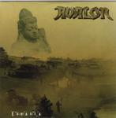

Home Artist links Label link

Avalon - Eurasia
| Artist: | Avalon |
| Title: | Eurasia |
| Label: | Omega Records 5941472 |
| Length(s): | 52 minutes |
| Year(s) of release: | 2000 |
| Month of review: | [01/2001] |
Line up
Chitral "Chity" Somapala - vocals, chapman stick
Sebastian Eder - guitars
Petra H. Delorian - bass
Jens Kuckelkorn - keyboards
Jacques Voutay - drums
Tracks
| 1) | Aurora | 2.11
|
| 2) | Burning Souls | 4.31
|
| 3) | Temujin | 4.52
|
| 4) | Black Hole Wisdom | 4.27
|
| 5) | Eternal Flame | 7.23
|
| 6) | Save The Holy Land | 4.29
|
| 7) | The Last Call | 5.19
|
| 8) | Eurasia | 3.07
|
| 9) | The Stranger | 4.59
|
| 10) | The Painting | 4.09
|
| 11) | Kyrie (bonus) | 3.29
|
| 12) | Semaruma | 2.47
|
Summary
With a new drummer behind the kit, this is the follow-up to Vision Eden,
which I happened to like.
The music
Aurora is the opener of the album, and if you didn't know better, you would
have thought this band to be into world music. Somapala opens with
Singhalese singing and to follow up with some sitar. But wait, the band plays
progmetal right? Yes they do, and this they show on the second track
Burning Souls. The song has a terrific chorus and is a driven track throughout.
The vocals of Somapala by the way remind me a bit of those of Maurits Kalsbeek
of Egdon Heath (a bit more versatile though).
The music becomes more technical (instead of catchy) on Temujin. The music
is darker now, but the melodic vocals continue to stand out. The drive
continues on this track, set by the strong rhythm guitar and the shouted
chorus. Black Hole Wisdom continues the line of the album with some triumphant
guitar playing and plodding vocal parts.
With over 7 minutes, Eternal Flame is the longest album on this track.
The opening is like the opener in Asian style, but this time it does not stay
so, because the uplifting, catchy chorus is typical of Western music. Plenty
of melodies in this track and all spot on. Again the music gets very triumphant
toward the end and both keyboards and guitar get their shot at fame.
Save The Holy Land goes back to basics with acoustic guitar and quick
percussion. The song is mostly built on an easy-going vocal melody, but
Somapala has enough variation in his voice to keep it interesting. A rather
mellow track after all the bombast of before. The female vocals at the end
refer to George Michael's Freedom. The Last Call is ballsy progmetal with
a contrasting willowy chorus in which the backing vocals are used to good
effect. At the end the guitarist plays a very sharp guitar solo.
Eurasia recaptures slightly the opening track. Some nice bass playing in this
track. The song continues straight into the catchy The Stranger (it seems they
wanted to avoid the title Eyes Of A Stranger). Some industrial sounds at the
end of this accessible, driven track. The Painting is a plaintive ballad and
to me a bit too mellow. The song picks up power and energy later in the track,
to wind down again shortly afterwards. One might wonder why the band has
chosen to include Mr. Mister's Kyrie. Although the song does fit in with
the rest of the music, the history it carries along is simply too heavy.
Notwithstanding the somewhat heavier guitars, the band stays quite close
to the original and this makes this version quite superfluous.
Semaruma closes down the album in style with Frippian soundscapish effects
and easy going acoustic guitar. A nice down-winder.
Conclusion
It took me a little while to realize it, but this is really a good album.
The songs are alternately varied and catchy, the production, singing and
playing are fine. Some ballads are present to take a bit gas back and they
could have left out the bonus track Kyrie. Best track is Eternal Flame.
Recommended to all those interested of progressive metal.
© Jurriaan Hage